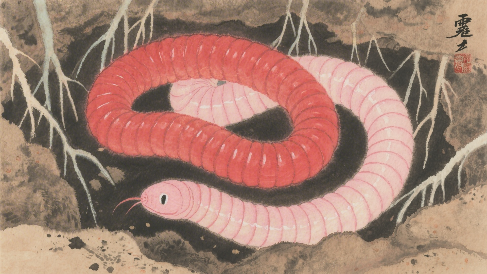
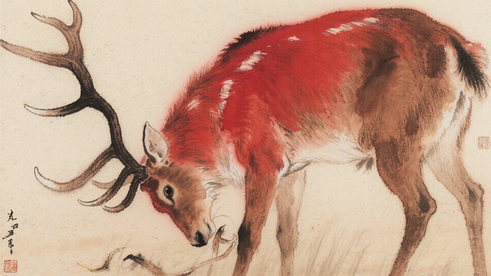
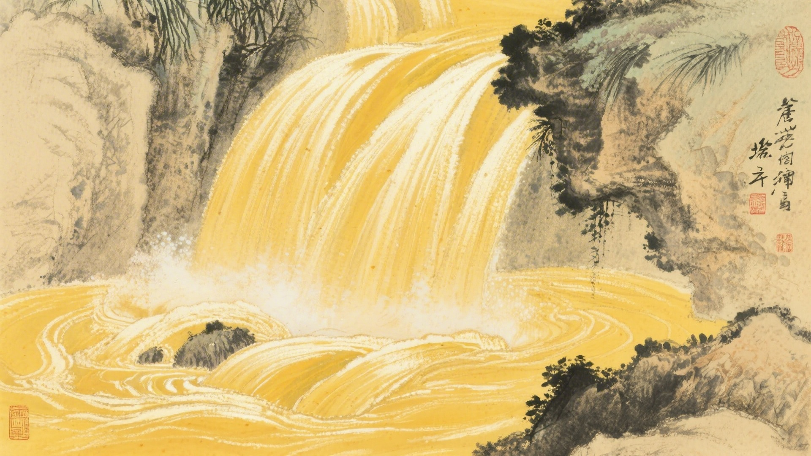
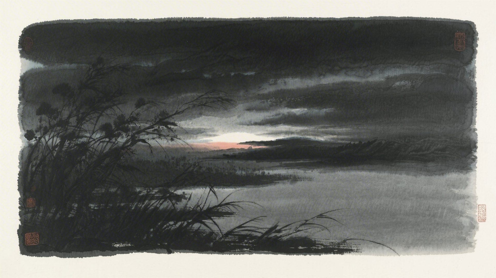
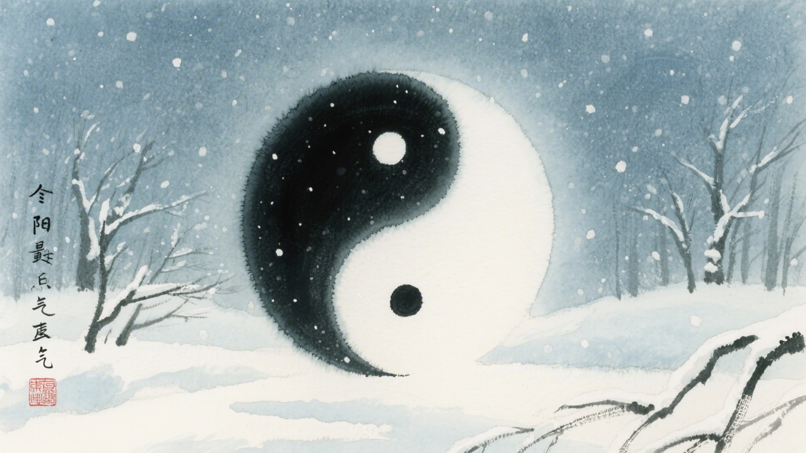

《中国传统色：故宫里的色彩美学》一书中为什么把下面这些颜色归入冬至节气？
银红、莲红、紫梅、紫矿
咸池、红䵂、蚩尤旗、霁红
莺儿、禹余粮、姚黄、蛾黄
濯绛、墨黪、驖骊、京元
冬至这天，白天最短，夜晚最长。蚯蚓蜷缩着，麋鹿角脱落，泉水开始涌动。古人说冬至有三候：蚯蚓结，麋角解，水泉动。这十六种颜色，便从这三候里来。
冬至的"至"，是极点的意思。太阳走到了最南边，白天短到了极致。颜色也到了极点，深的更深，浅的更浅，像是站在悬崖边上，看尽了风景。
对应：冬至节气一候"蚯蚓结"的起、承、转、合四色。
色彩意象：蚯蚓蜷缩，阴气极盛。
从淡红到深紫，是冬至阴气最盛的颜色，也是冬至时节最轻柔的过渡。

对应：冬至节气二候"麋角解"的起、承、转、合四色。
色彩意象：麋鹿脱角，阳气始生。
从橙红到鲜红，是阳气开始回升的颜色，也是冬至时节最深沉的底色。

对应：冬至节气三候"水泉动"的起、承、转、合四色（其一）。
色彩意象：泉水涌动，生机暗涌。
从嫩黄到金黄，是冬天里隐藏的春天的颜色，也是冬至时节最清冷的画面。

对应：冬至节气三候"水泉动"的起、承、转、合四色（其二）。
色彩意象：冬至已过，春天不远。
从绛红到深黑，是阴阳交替的颜色，也是冬至时节最内敛的画面。

冬至这天，有吃饺子的习俗，也有吃汤圆的。北饺子，南汤圆，都是圆圆的，暖暖的。颜色也跟着吃，红的吃进肚子里，黄的热进胃里，暖暖和和地数九。

颜色也懂得等待。它们在最冷的天气里，最黑的夜晚里，静静地等。等白天变长，等阳光变暖，等春天回来。它们知道，冬至一过，白天就开始长了。
（以上解读不代表原书观点）